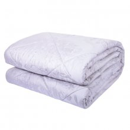
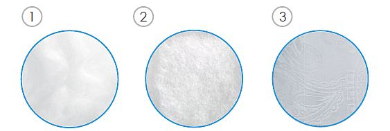
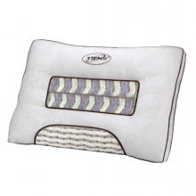
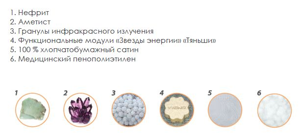
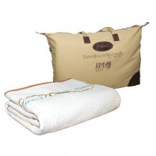
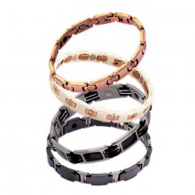
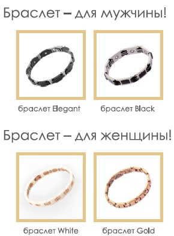
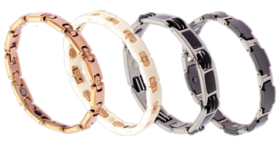
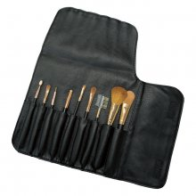

|

Одеяло «Здоровый сон» «Тяньши» (размер: 200 х 230 см)Комфортный сон действительно восстанавливает здоровье. «Одеяло «Здоровый сон» «Тяньши» идеально подходит для качественного сна и является отличным дополнением к роскошному набору постельных принадлежностей «Здоровый сон» «Тяньши». Состав: Рекомендован для: Преимущества продукта: Структура:  Внимание! 3 вида оздоровительного материала, в 1,5 раза теплее, чем обычное одеяло при том же весе, 100 % здоровый сон! Сделайте ваш отдых продуктивным, а жизнь яркой и насыщенной! |
|

Подушка «Здоровый сон» «Тяньши»Забудьте о болях в шее и спине – удобное расположение головы на «Подушке «Здоровый сон» «Тяньши» обеспечит вам комфортный сон в течение всей ночи и отличное самочувствие в течение будущего дня! Состав: Рекомендован для: Преимущества продукта: 3 вида энергии, 6 действующих компонентов, 2 уникальных дизайнерских решения – «Подушка «Здоровый сон» «Тяньши» обеспечивает крепкий и здоровый сон, снижает усталость и повышает жизненный тонус!  |
|

Наматрасник «Здоровый сон» «Тяньши» (размер: 178 см х 198 см)Инновационная запатентованная технология «Звезд энергии» «Тяньши», использованная при создании данного изделия, позволит вам восстановить свои силы, подарит жизнерадостность. Наматрасник долговечен и функционален. Идеально подойдет для практичных людей, заботящихся о себе. Функции: В составе Наматрасника «Здоровый сон» «Тяньши»: Если вы цените безопасность, современные разработки, если вашему сердцу не чужда забота об окружающей среде, практичный и модный Наматрасник «Здоровый сон» «Тяньши» станет изысканным и полезным дополнением вашего домашнего интерьера, подарит вам крепкий сон, здоровье, уверенность в завтрашнем дне, а также своих силах! |
|

Титановые магнитные браслеты «Тяньши»Титановые браслеты помогут мне! Вы приобрели браслеты «Тяньши»! Титановые магнитные браслеты «Тяньши» – изысканный аксессуар, который станет прекрасным дополнением любого гардероба. Меняйте браслеты в зависимости от вашего настроения и стиля одежды! В коллекции представлены мужские и женские браслеты различных расцветок: золотой, серебряный, белый и черный. Как работают титановые магнитные браслеты «Тяньши» Браслеты для восстановления сил! Практичны в применении. Не требуют особого ухода Позаботьтесь о себе и своих любимых! Титан  Магнит Наши браслеты – особенные! Браслет рекомендуется:  |
|

Набор кисточек для макияжа Time ShadowРоскошный набор кисточек идеален для профессионального макияжа, является отличным дополнением косметички каждой женщины. Кисточки изготовлены из натурального ультрамягкого гипоаллергенного ворса. Богатая комплек тация набора для макияжа, своеобразие форм и размеров кисточек позволят создать вам свой неповторимый, изысканный образ. Набор включает в себя 9 кисточек, располагающихся в дизайнерском чехле на удобной липучке. Ручки кисточек – из натурального дерева. |